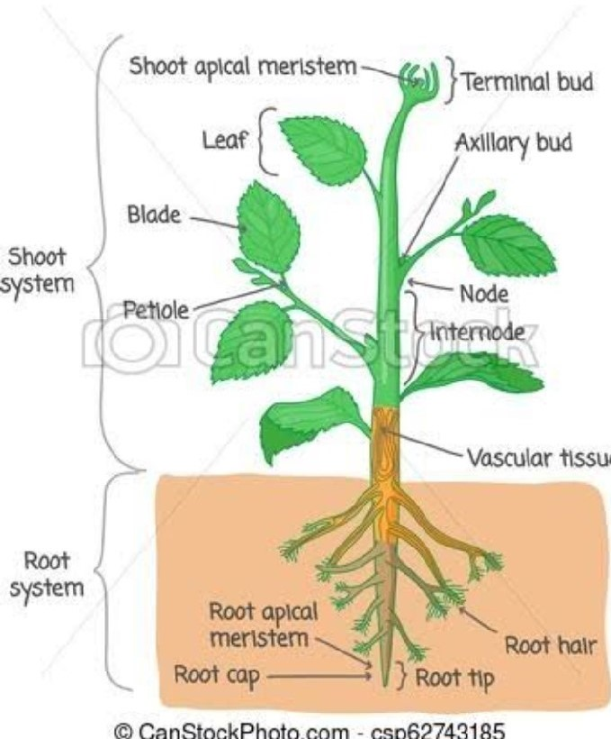

CROP PLANT FORM

Crop plant form : refers to the physical characteristics and structure of cultivated plant grown for food , fiber, or
other agriculture purpose .It encompasses various aspect such as height, branching pattern, leaf shape, root structure
, and overall growth habit.Crop plant form can vary significantly between different species and cultiars, and often influences
cultvation practices, such as planting density, spacing, and harvesting method
- Root
- Stems
- Leaves
- Flowers
- Fruits
- Seeds
Each of these parts plays a vital role in the growth, development,and reproduction of crops.
- Root : The underground part of the plant that anchors it in the soil and absorb water and nutrients.
- Stems : The aboveground part that suports the plant and transports water, nutrients, and sugars between
the roots and leaves.
-
Leaves : The primary organs of photosynthesis, responsible for capturing sunlight and converting it into energy.
-
Flowers : Reproductive structure that produce seed or fruits necessary for plant reproduction.
-
Fruits : Structures containing Seeds that develop from flower and serve as a means of dispersing seeds for reproduction.
-
seeds : Mature ovules containing embryonic plants, enclosed in protective seed coats, and capable of germination
to produce new plants.
CLASSES OF FLOWERING PLANT
- Monocotyledons
- Dicotyledons
Monocotyledons and Dicotyledons are two classes of flowering plants distiguished by the number of
cotyledons. These classes have various differences in their leaf venation , floral arrangement, root system and more.
- Monocotyledons : It is also refers to as monocot,they are flowering plant that has long, narrow leave with parallel vein.
they usually have flower part in multiples of three and their seeds have only one seed leaf when they sprout.
examples include: grasses, lilies , and palms. they can be used for food,forage, fiber, ornamental, environmental etc
-
Dicotyledons : These are plants that start their life with two seed leaves, or cotyledons, which provide nutritional value to the emerging plant.